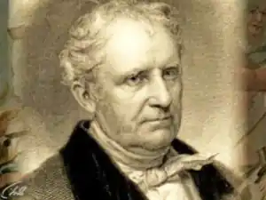
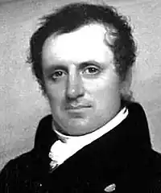

КУПЕР, Джеймс Фенімор (Cooper, James Fenimore — 15.09.1789, Берлінгтон, шт. Нью-Джерсі — 14.09.1851, Куперстаун, шт. Нью-Йорк) — американський письменник.
Купер — основоположник історичного, авантюрного та соціально-критичного роману в літературі США. Автор 33 романів, зокрема морських, сатиричних, звичаєвоописових, своєю творчістю письменник улягає в рамки романтичного напряму в літературі.
Купер був сином землевласника-конгресмена зі штату Нью-Йорк, котрий створив поселення Куперстаун, де проминуло дитинство майбутнього романіста. Після навчання у місцевій школі він провчився два роки у Єльському коледжі — звідти Купера виключили за дисциплінарне порушення. Прослуживши п'ять років на флоті, Купер одружився і, побившись об заклад, розпочав письменницьку діяльність першим, художньо слабким романом "Осторога" ("Precaution", 1820). Відомим письменник став уже після виходу друком роману "Шпигун" ("The Spy", 1821), присвяченого американській революції, першого твору в цьому жанрі, написаного "американцем, про американців, для американців" (В. Ковальов). Купер започатковував тут тему простого, скромного патріота Гарві Берча, захисника своєї вітчизни, секретного агента Дж. Вашінгтона — цю тему у літературі СІЛА продовжать Г. Мелвілл в "Ізраелі Поттері" та Марк Твен в "Янкі з Коннектикуту при дворі короля Артура". Той факт, що романи Купера не є, навіть у своєму підході до "історизму", простим наслідуванням В. Скотта, видно з головного його твору, що здобув Куперу славу світового письменника — серії з п'яти романів, названих "Повістями по Шкіряну Панчоху" — за іменем головного героя, слідопита і мисливця Натті Бампо. Хоча кожний із романів прослідковує один з періодів життя героя, а разом з ним — і етап освоєння континенту та становлення нації, з жанрового боку вони значно різняться. Приміром, роман "Піонери" ("The Pioneers", 1823), найбільш соціально-проблемний у серії, насичений суспільними конфліктами та зображенням галереї типів, які прийшли разом з буржуазною цивілізацією на фронтир, внаслідок чого першопроходці-піонери, які освоювали дикий край, змушені податись далі, на Дикий Захід. "Останній із могікан" ("The Last of the Mohicans", 1826) — найавантюрніший і найзнаменитіший із романів Купера, динамічний за фабулою, де письменник ставить проблему "червоношкірих дияволів" чи "шляхетних дикунів" — проблему ставлення до індійської культури та її місця у США. Вона помітно ідеалізована як в образі злочинця Маґуа, вождя гуронів, так і в образі Ункаса, ідеального "лицаря" лісової глушини, юного індіанця-де-лавара. Такий самий піднесений характер має й ідеальна дружба представників двох рас, двох культур — Чингачгука та Соколиного Ока (Натті Бампо). Письменник вважає, що індіанцеві доведеться піти з історичної арени — у цьому трагедія американських аборигенів, нездатних адаптуватися до цивілізації. "Прерія" ("The Prairie", 1827) — третій роман серії, що завершується смертю Натті (чи Трапера) на обширах американських прерій. Ці величезні простори, на думку автора, повинні змусити людину визначитися перед невідомим у житті, перед небувалим в історії, як і перед самою собою, і зробити етичний вибір. Це — найбільш "філософський" з усіх романів про Шкіряну Панчоху. Центральний образ розвідника лісів, піонера-першопроходця, став одним з архетипних персонажів літератури США. Він — постать двоїсто-суперечлива: друг індіанців і водночас їхній винищувач, оборонець природи і, як призвісник "цивілізації", її зрадник. До власне історичних романів Купера належать "Лайонел Лінкольн, або Облога Бостона" ("Lionel Linkoln...", 1825), присвячений війні за незалежність США, "Долина Віштон-Віш" ("The Wept of Wish-ton-Wish", 1829) — про пуританів Нової Англії, де вперше використаний мотив змішаного шлюбу та "індіанського полону", "Мерседес із Кастилії"("Mercedece of Castile", 1840) — роман про плавання X. Колумба та низка інших. Як зачинатель морської теми, Купер є автором "Лоцмана" ("The Pilot", 1823), авантюрного роману про Джона Пола Джонса, американського флотоводця епохи війни за Незалежність, "Червоного Корсара"("The Red Rover", 1828), "Морської чарівниці"("The WaterWitch", 1830) та "Двох адміралів"("The Two Admirals", 1842). Досвідом служби на флоті навіяна документальна "Історія флоту Сполучених Штатів" ("The History of the Navy of the United States of America", 1834). Роки перебування у Європі (1826—1833) змусили Купера розгорнути низку зіставлень американської демократії з європейською тиранією як наслідив розвитку двох різних цивілізацій — суто американська, настільки ж правильна, наскільки й однобока антиномія. Ця ідея, витримана іноді в дещо схематичному, пропагандистському дусі, пронизує роман "Браво"("The Bravo", 1831), присвячений венеціанській республіці, "Генденмауер" ("TheHeiderrmauer", 1832) і "Кат" ("The Headsman", 1833). Однак повернення у США у 1833 р. викликало зворотну реакцію розчарування, пов'язаного зі зміною у світогляді письменника: замість демократії він виявив на батьківщині тенденції до власництва та накопичення. Тому замість панегірика американській демократії на кшталт створеної перед поїздкою книги "Погляди американців"(1828) Купер написав сповнений гіркоти "Лист до співвітчизників" ("A Letter to His Countrymen", 1834). Цей документально-публіцистичний твір відкрив нову грань творчості письменника — сатиричний памфлет, яким став роман "Монікіни" ("The Monikins", 1835), книги "Додому" ("Homeward Bound", 1838), а також "Американський демократ" ("The American Democrat", 1838). Ці книги спричинили жорстку полеміку в пресі та цькування на письменника, звинуваченого в "антипатріотизмі". Позиція Купера була непростою: сам великий землевласник, він говорив про порушення американських демократичних принципів, вважаючи, що народом маніпулюють політикани та ділки. У цій ситуації Купер відчув необхідність повернутися до національного минулого, аби знайти відповідь на суперечності сучасності та моральну противагу сучасній зіпсутості. Так з'явилися два останні романи серії про Шкіряну Панчоху — "Слідопит" ("The Pathfinder", 1840) і "Звіробій" ("The Deerslayer", 1841). Як видно із назв, уся увага зосереджена в них на особистості героя, в якому автор цінує понад усе щирість та природність; Натті виступає як приватна особа і водночас — як носій правдиво американських чеснот. У романах пенталогії про Шкіряну Панчоху Купер проявляє себе як талановитий пейзажист, філософ, схильний не лише до схематизму та романтизації характерів і обставин, а й притчеподібності, гумору та епічності бачення. Схожими причинами було викликане звернення до трилогії романів про земельну ренту, ще іменовану "Хроніками Літтлпейджа" ("Сатанстоу" — "Satanstoe", 1845; "Землемір" — "The Chainbearer", 1845; "Червоношкірі" — "The Redskins", 1846), де тема соціальна — питання про землеволодіння обертається дидактичною стороною, шкодячи тим самим цікавості оповіді. Пізня творчість Купера, особливо морські романи цього періоду ("На суші та на морі" — "Afloat and Ashore", 1844; "Джек Гір" — "Jack Tier", 1845; "Морські леви" — "The Sea Lions", 1849), а також "Мисливець на бджіл " ("The Oak-Openings", 1848), свідчить про наростання песимізму та зацікавлення релігійними мотивами та містицизмом; одним із головних прийомів стає алегоричність оповіді та сюжету. Місце Купера в літературі США, незважаючи на злети й падіння інтересу до багатьох його творів, залишається значним, передусім як майстра романного жанру й оповідача. Він володів даром проблемності та "формульності" образу — "Піонери", "Останній із могікан" та "Прерія" стали ходовими поняттями-штампами, але безпомильно позначили корінні проблеми і тенденції часу. Найважливіші герої — такі, як Натті Бампо, Гарві Берч, галерея "білих" та "індіанських" персонажів, — містять у собі безсумнівну якість загальнолюдських типів. Сила Купера-оповідача нерідко ховається за позірними слабкостями Купера-митця (слабка характеризація, плоскісний підхід до зображення персонажів, упередженість, зумовлена національною приналежністю чи соціальним становищем). Однак має бути оцінена майстерність і новаторство К.-митця, оповідь якого може вестися однаково вільно і від першої особи, і від кількох оповідачів, молодого та старого; читач долучається до величі історичних процесів, хоча іноді зазнає відчуття людської марноти поміж диких стихій і часових змін. Різні грані таланту Купера-романтика викликали критику письменників-реалістів (Марка Твена, Брета Гарта), однак вони ж спричинили захоплені відгуки Дж. Конрада й Д.Г. Лоуренса. Посмертна слава Купера перетворила його на автора авантюрних творів, що породили масу адаптацій для молодіжних видань, за романами із серії про Шкіряну Панчоху поставлено чимало фільмів. У літературі США спадщина Купера двоїста: авантюрно-міфологічною стороною своєї творчості він сильно сприяв розвитку пригодницької літератури про фронтир і становленню жанру роману-вестерна. Соціально-критична та філософська сторона традиції Купера знайшла відображення в американських романістів XX ст. — Вілли Кезер та інших прозаїків, вихідців з Американського Заходу — Ф.Ф. Манфреда й ін. В Україні окремі твори Купера переклали М. Лебединець, М. Іванов, І. Корунець, Л. Солонько, О. Терех, Є. Крижевич, Р. Доценко та ін. А. Ващенко